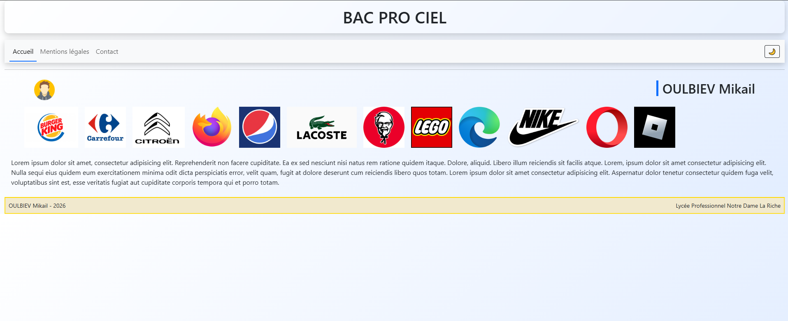

2024–2027 · Terminale
Bac professionnel Cybersécurité, informatique et réseaux, électronique (CIEL)
Lycée Professionnel Notre-Dame La Riche – Tours
Portfolio · Recherche de stage 2026
Élève en Terminale Bac professionnel Cybersécurité, informatique et réseaux, électronique (CIEL), je développe mes compétences en informatique, réseaux, maintenance, développement web et développement de jeux.
Je recherche un stage de 6 semaines du 2 novembre au 11 décembre 2026.
01 · À propos
Curieux et autonome, j’aime comprendre le fonctionnement des outils informatiques et résoudre des problèmes concrets. J’apprends par la pratique, à travers ma formation, mes stages et mes projets.
Je souhaite poursuivre cette progression auprès de professionnels, contribuer à une équipe et découvrir davantage les métiers de l’informatique.
02 · Formation
2024–2027 · Terminale
Lycée Professionnel Notre-Dame La Riche – Tours
03 · Compétences
01
Création d’interfaces et animations CSS.
02
Création de mécaniques de jeu et d’interfaces utilisateur.
03
Maintenance, préparation de postes, support utilisateurs et découverte des infrastructures réseaux.
04
Diagnostic et réparation électronique.
04 · Projets
Projet personnel · Unity / C#
Développement d’un Aim Trainer avec Unity : programmation en C#, création de mécaniques de jeu, système de cibles, HUD, menus, paramètres, sauvegarde des paramètres, optimisation et effets sonores.
Projet web
Site web présenté autour d’un atelier et d’une boutique de réparation de vélos. Un petit jeu secret est également caché sur le site.

Projet web · Bac Pro CIEL
Interface web réalisée dans le cadre du Bac Pro CIEL.
05 · Expériences
Mars – avril 2026
Juin 2026
2024–2025
06 · Contact
Je recherche un stage de 6 semaines, du 2 novembre au 11 décembre 2026.